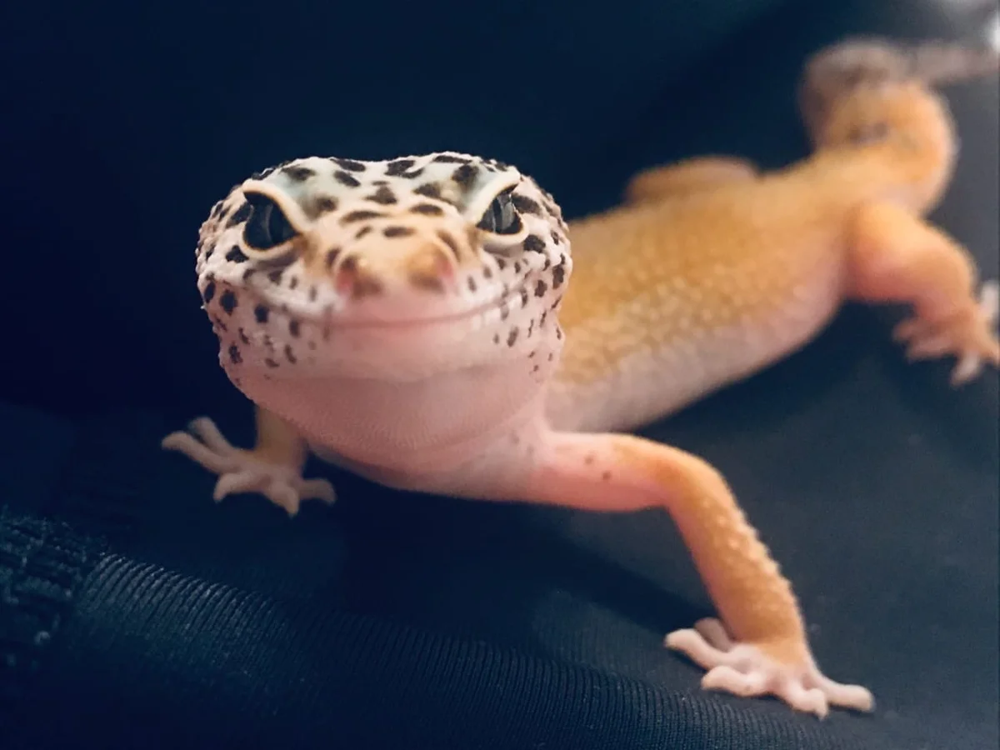
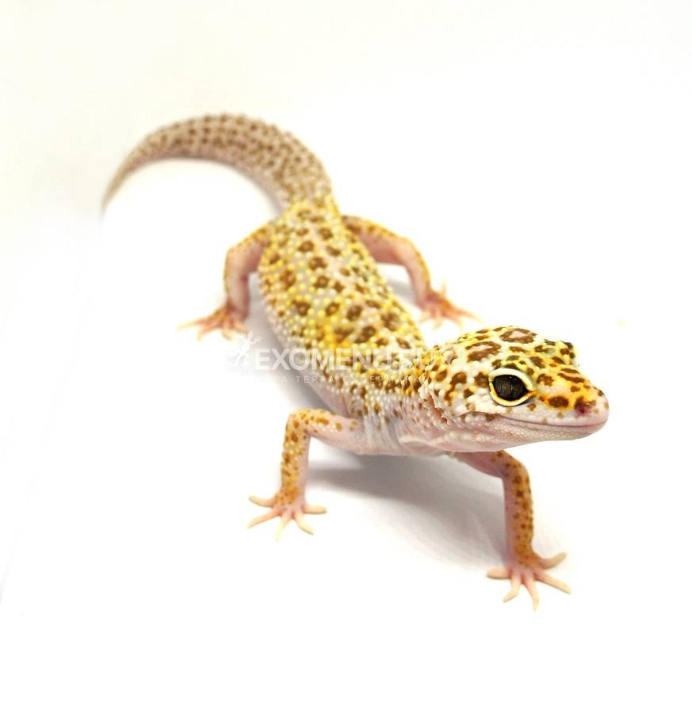
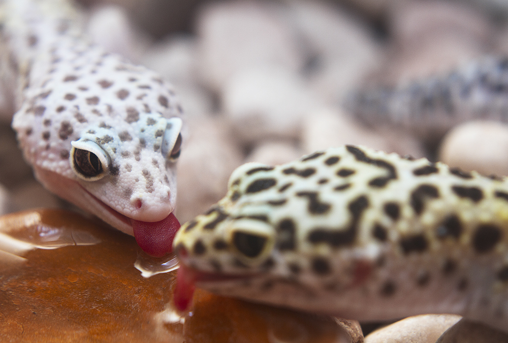

Во-первых, ящерицы гипоаллергенны. У них нет ворсинок и кожных частичек, которые могут вызвать аллергическую реакцию. Во время линьки они съедают свою шкурку, обкусывая её с себя. А даже если кусочек линьки не будет съеден, а останется в террариуме, - это просто кусочек натуральной кожи, только очень тонкой. Так что если у вас нет аллергии на сумочку - ящерица тоже не вызовет реакцию.
Во-вторых, эублефары очень чистоплотны. Они отводят под испражнения определённый угол своей территории, и всё, что требуется, - положить в выбранный угол салфетку и аккуратно заменять её по мере необходимости (как правило, необходимость появляется через день-два после кормления)

В-третьих, эублефары - достаточно любопытные и сообразительные животные. Конечно, многое зависит от характера каждой конкретной ящерицы, но в целом они неагрессивны, легко приучаются к рукам, и даже узнают "своих людей" - тех, с кем наиболее часто контактируют. Про взаимодействие с эушкой я сделаю отдельную статью. В двух словах - эублефар с удовольствием будет гулять по вашим плечам, по дивану, позировать вам для фото. В остальное же время он спокойно живёт в своём террариуме, и не обидится на вас, если вы берёте его на руки не каждый день.
В-четвёртых, по продолжительности жизни эублефары сопоставимы с кошками и собаками! Да, вот эта маленькая ящерка при правильном уходе будет радовать вас 10-15 лет, а то и дольше! Поэтому, если речь идёт о маленьком животном, то эублефар гораздо лучше хомячка!
В-пятых, эублефары действительно самые простые террариумные животные, которые идеально подходят для новичка. Взрослый эублефар ест один раз в 3-4 дня, но вполне может изредка пережить и неделю без кормления, так что нет проблемы, с кем оставить питомца на выходные или на новогодние/майские каникулы. Правда, нужно обеспечить запас питьевой воды и влажности, но это решить можно. Будучи ночными животными, эублефары не требуют обогрева лампой - им достаточно согревающего коврика или шнура. Наоборот, лишний свет им будет только мешать. Опять же, как ночное животное, эуш выспится, пока вы на работе, и будет рад взаимодействовать с вами вечером.
Конечно, есть и свои недостатки. Главная, наверное, это корм. Эублефары - строго насекомоядные животные, а это значит, что им нужен кормовой сверчок или таракан.
Пятнистый эублефар — лакомка, он любит разнообразную пищу, но это совсем не означает, что мы будем его баловать. Ситуация с едой при содержании в домашних условиях у леопардовых гекконов близка к ситуации с детьми в плане кормления — будут выпрашивать «конфетки» и потом воротить нос от полноценной необходимой для здоровья пищи.
Кормовые объекты (сокращённо КО) мы разделим на 2 вида — основные и дополнительные (лакомства). Основным кормом, наиболее полноценным и лучше всего усваиваемым (и зачастую самым доступным) являются сверчки — домовые, банановые и двупятнистые (они же — чёрные). На втором месте стоят тараканы. Можно кормить живыми сверчками, можно использовать замороженных насекомых. Если вы решили кормить своих питомцев живым кормом, обратите особое внимание, чтобы насекомые были предварительно хорошо накормлены. Нельзя купить в зоомагазине пару десятков живых сверчков в пустой банке и просто постепенно их скормить леопардовым гекконам. Если вы покормили эублефара «пустым сверчком», можете считать, что вообще не кормили их. Изучите условия содержания и кормления сверчков, выполняйте их и ваш эублефар будет сыт и здоров.
Если вы выбрали в качестве корма заморозку, следите, чтобы замороженные сверчки не растаяли при перевозке, храните их в морозильнике, не перезамораживайте их повторно. Для кормления эублефаров предварительно разморозьте примерно то количество сверчков, которое вы планируете скормить своим питомцам. Кормите сразу, не храните размороженного сверчка, через 2 часа просто выкиньте, он уже не годится в пищу.
Если в данный момент в продаже вы не нашли заморозку, а кормить живыми вам не удобно, купите живых, дайте им максимальное разнообразие корма на сутки, сверчки наполнят желудки и затем вы можете просто пересыпать их в пакет и положить в морозилку. Точно так же можно поступить, если вы взяли КО и сомневаетесь в его качестве, у незнакомого поставщика, например. Обеспечить полноценный корм для эублефаров, а значит и здоровье им и спокойствие и радость общения с питомцами себе — это наша прямая обязанность.
До полугода кормите молодых эублефаров только основными КО, с обязательным присутствием витаминной и минеральной подкормки. Давать более тяжёлую и жирную пищу малышам нецелесообразно и вредно для здоровья.
Минеральная подкормка (кальций) должна быть всегда в доступе в террариуме. Просто насыпьте немного в маленькую мисочку или пластиковую крышечку и поставьте её на пол в террариуме, и вы увидите, с каким удовольствием ваши питомцы поедают кальций именно в том количестве, который им необходим для нормальной линьки и роста
Витаминная подкормка — такой же обязательный элемент, в ней мы обваливаем сверчка перед тем, как дать его леопардовому геккону. Сколько конкретно давать витаминной подкормки ящерице — несколько спорный вопрос, сколько крупных заводчиков, столько и мнений. В среднем при кормлении эублефаров дважды в неделю — еженедельно, по 3-5 обработанных сверчков для одной взрослой особи. Во время беременности и кладки яиц самка тратит много питательных веществ, поэтому соответственно, и ест больше, и витамины мы даём немного больше.
В террариуме должна быть постоянно, свежая, чистая. Налейте в не очень маленькую неглубокую мисочку, и может быть, вы с удовольствием будете наблюдать, как ваш эублефар лакает воду своим изящным язычком, похожим на лепесток розы. Или вам посчастливится увидеть, как этот красавец в жару будет принимать ванну. Это они делают редко и далеко не все особи. Зато потоптаться в миске с водой всеми лапами, а потом этими же лапами обязательно залезть в кальций — это любят многие озорники. Можно опрыскивать стенки террариума, некоторые ящерицы любят слизывать капельки со стенок.
Леопардовые гекконы — сумеречные животные, поэтому кормить их предпочтительно либо утром, либо вечером. Старайтесь делать это примерн--о в одно и то же время, ваши питомцы быстро привыкнут к такому распорядку и будут заранее приходить к месту кормёжки.
Как часто кормить взрослых леопардовых гекконов и в каком количестве давать сверчков — это тоже вопрос, по поводу которого существуют два противоположных мнения. Одно — кормить раз в 3-4 дня по 5-7 крупных сверчков, эублефар при этом не переедает, но и вволю не наедается. Второе — кормить через день-два и вволю, пока эу сам не закончит трапезу. Я предлагаю срединный путь, когда частота и объём кормления зависит от жизненных циклов ящерицы. В среднем это дважды в неделю, а количество — пока эублефар сам активно набрасывается на сверчка. Не хочет — не «уговаривать», не махать перед носом сверчком по 5 минут. Если ваш питомец голоден, и съел подряд несколько крупных сверчков, то вы сможете пронаблюдать «странное» поведение, геккон изгибает шею вбок и вниз, приминая съеденных сверчков внутри себя, это абсолютно нормально.
Малыши леопардовых гекконов начинают питаться с третьего-четвёртого дня от рождения, их кормим ежедневно 1-2 раза в день, по 1-2 мелкому сверчку, по мере роста количество увеличивается, с двух-трёх месяцев можно кормить через день, а количество сверчков доходит до 4-5 небольших сверчка на приём, к 8-10 месяцам кормим раз в 3 дня, затем переводим на взрослый режим питания. В процессе кормления вы можете явственно увидеть характер именно вашего пятнистого эублефара, и при желании начать его приручать.